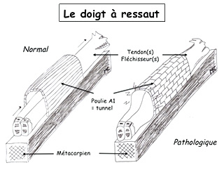

Opération doigt à ressaut
Les « doigt à ressaut », également connus sous le nom de « ténosynovite sténosante » résulte d’un conflit entre les tendons et le tunnel qui provoque une inflammation.
De manière très schématique, le conflit est le suivant : les tendons sont trop gros pour entrer dans le tunnel et lorsqu’ils y parviennent, le passage se fait brutalement et en force entraînant un ressaut. Voir le schéma ci-contre
Ainsi, lorsque le patient essaie d’ouvrir la main, les doigts touchés par cette pathologie ne se déploient pas immédiatement : ils se déploient d’un coup dans les secondes qui suivent.
Le doigt à ressaut est une atteinte fréquente de la main. De manière générale, elle concerne plutôt le majeur, l’annulaire et le pouce. Cependant, il convient de préciser que tous les doigts peuvent être touchés par cette pathologie.
Traitements ou opération doigt à ressaut :
Dans un premier temps, nul besoin de recourir à une intervention chirurgicale pour traiter cette pathologie de la main. Une mise au repos associée à la prise d’anti-inflammatoires prescrits par le médecin peut suffire. Toutefois, dans certains cas, quelques infiltrations peuvent être prescrites par le spécialiste
L’opération du doigt à ressaut est généralement prescrite dans le cadre d’un échec avéré des traitements non-chirurgicaux. Elle peut cependant être prescrite si le blocage des doigts est permanent et qu’il gênant.
En fonction des résultats de cette analyse, diverses pistes de traitements peuvent être envisagées (conjointement avec un spécialiste).
Opération et récupération post-intervention
En règle générale, suite à une opération du doigt à ressaut, la durée de récupération est d’environs 6 semaines pour les doigts longs. Pour des doigts courts, tels que le pouce, ce délai est moins important.
En ce qui concerne la durée d’arrêt de travail après opération, cela dépend de la nature du travail effectué. Toutefois, la durée de l’arrêt ne dépasse généralement pas 3 semaines.
Vidéo : Canal Carpien sous endoscopie
(attention certaines images sont à éviter pour les personnes sensibles)Ainsi, lorsque le patient essaie d’ouvrir la main, les doigts touchés par cette pathologie ne se déploient pas immédiatement : ils se déploient d’un coup dans les secondes qui suivent.
résumé de video